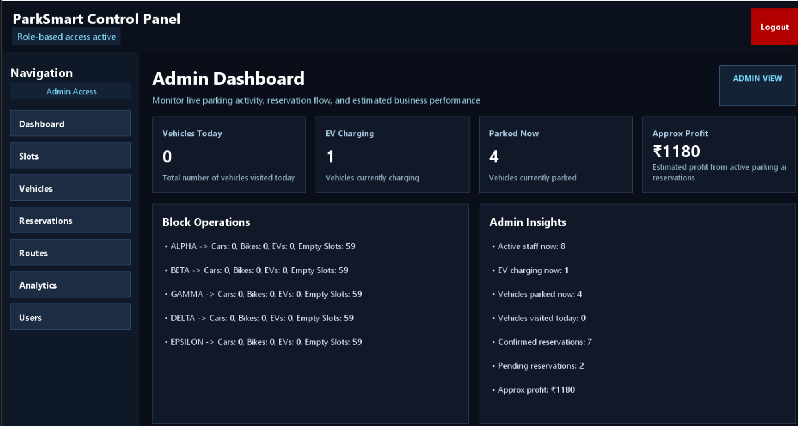
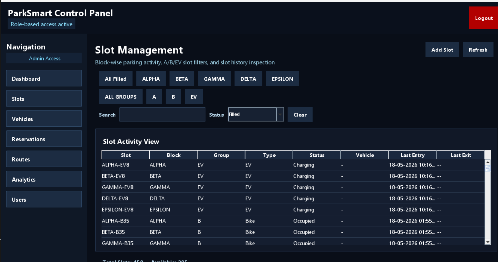
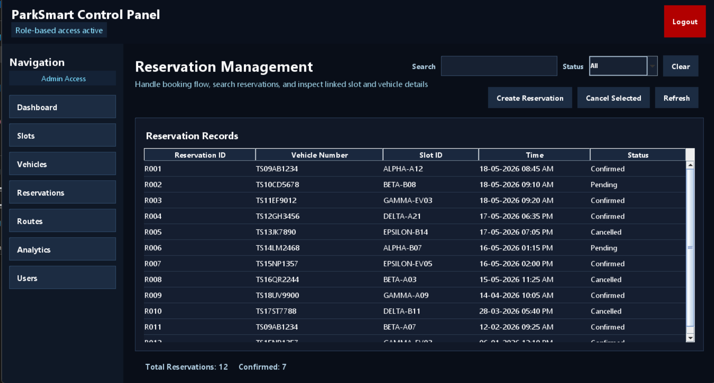
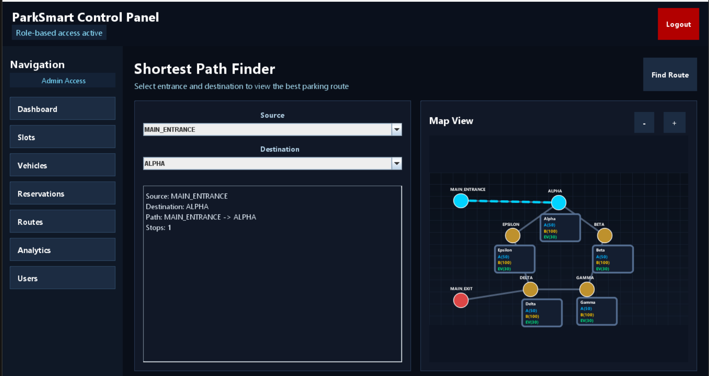
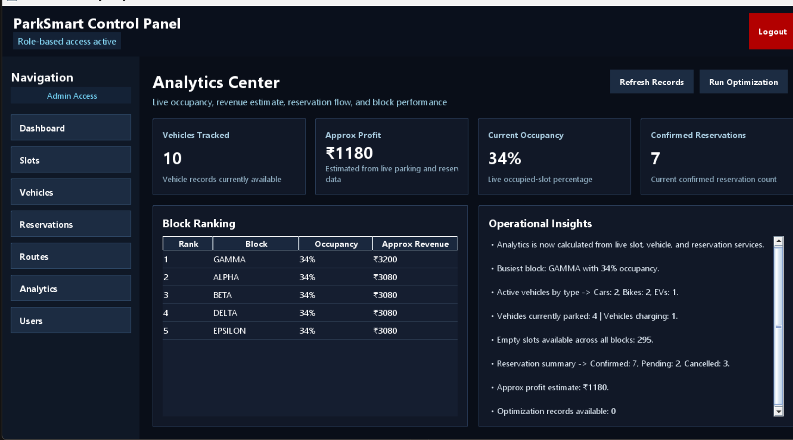

Smart Parking + Data Structures
A Java Swing smart parking management system designed to demonstrate practical DSA implementation in a real academic project.
ParkSmart integrates slot management, vehicle records, reservations, route visualization, and analytics into one desktop application. The project highlights practical use of graphs, shortest path algorithms, searching, sorting, and modular service-based design in a smart parking workflow.
Overview
Project purpose
ParkSmart is designed to model a smart parking environment where users can manage slot allocation, vehicle entry records, reservations, and navigation inside a parking system. The academic value of the project comes from mapping real parking operations to practical data structure and algorithm use rather than only building a frontend. [file:2][cite:57]
The system demonstrates how routing, occupancy management, history tracking, filtering, and analytics can be organized in a clean Java architecture. The project also shows how GUI panels can remain separated from business logic by delegating operations to service and DSA layers. [file:1][file:2]
Architecture
Module and package structure
Core packages
- app handles startup and main entry flow. [file:1]
- gui contains panels such as dashboard, slots, vehicles, reservations, routes, and analytics. [file:1]
- model stores entities like parking slots, vehicles, reservations, and route data. [file:1]
- service contains business rules and connects GUI to data and algorithms. [file:1][file:2]
- dsa contains graph structures, shortest path algorithms, trees, and optimization-related logic. [file:1][file:2]
Major project modules
- Dashboard for occupancy and quick summary information.
- Slot management for parking allocation and status updates.
- Vehicle management for search, tracking, and history viewing.
- Reservation management for booking and status handling.
- Route visualizer for shortest path guidance on the parking map.
- Analytics for occupancy trends, block usage, and operational insights. [file:2]
Graph modeling
The parking layout is modeled as connected nodes and edges so route computation can use graph traversal and shortest-path logic. [file:2][cite:17]
Service layer
Services isolate data and algorithm operations from Swing UI code, helping maintain cleaner separation of responsibilities. [file:1][file:2]
GUI integration
The interface presents DSA results in a usable form through Java Swing panels and interactive workflows. [file:1]
DSA Coverage
Academic concepts implemented
| Concept | How it is used in ParkSmart |
|---|---|
| Graphs | Models parking blocks, entrances, exits, and navigable route connections. [file:2][cite:17] |
| Shortest Path | Supports route generation from entrance to target parking block or slot. [file:2][cite:17] |
| Searching | Used in slot lookup, vehicle search, filtering, and reservation retrieval. [file:2] |
| Sorting | Useful for ordering records, history lists, and occupancy-related views. [file:2] |
| Trees / Structured Storage | The project architecture and design references tree-based DSA components such as BST/AVL style usage in academic context. [file:1][file:2] |
| Optimization | Applied conceptually for reservations, fee logic, route efficiency, and analytics improvements. [file:2] |
Workflow
System workflow
Login and access
Admin or staff enters the system and reaches the main dashboard for operational access. The role-based workflow determines which management tasks are available in the interface. [file:2]
Dashboard review
Users review current occupancy, availability, and activity summaries before moving into a management task. This acts as the operational overview screen. [file:2]
Operational action
Users move to slot, vehicle, or reservation modules to create, search, filter, update, or review records depending on the task. The GUI panels interact with services instead of directly embedding logic. [file:1][file:2]
Route assistance
When navigation is needed, the route module calculates a shortest or suitable path through the parking graph and displays it visually. This connects academic graph theory to a practical parking use case. [file:2][cite:17]
Analytics and review
Analytics summarizes usage patterns, occupancy distribution, and performance indicators so the system can provide decision support in addition to basic record management. [file:2]
User Flow
Typical user journey
Admin flow
- Login to the system.
- Review dashboard metrics and occupancy information.
- Manage slots and update availability.
- Inspect vehicle records and reservation details.
- Use route visualization to verify path behavior.
- Study analytics for decision support and reporting. [file:2]
Staff flow
- Login and access operational panels.
- Search for a slot or assigned reservation.
- Register or verify vehicle details.
- Guide parking movement using route output.
- Update status after entry, parking, or exit. [file:2]
Use Cases
Main academic and system use cases
Functional use cases
- Add, edit, and inspect parking slot data.
- Register incoming vehicles and maintain records.
- Create and track reservations.
- Find route from entrance to target block or parking area.
- Check occupancy and parking statistics.
- Review usage history and filtered records. [file:2]
Academic use cases
- Built as an academic smart parking system using Java Swing.
- Uses graph-based routing and shortest path logic for navigation.
- Follows a modular structure with app, gui, model, service, and dsa packages.
- Supports admin and staff workflows through a desktop management interface.
Execution
How to run the project
Requirements
- Java JDK installed.
- An IDE such as IntelliJ IDEA, Eclipse, or VS Code with Java support.
- The ParkSmart source folder available locally.
Compile and run from terminal
javac --release 8 -d out -sourcepath src src/app/Main.java
java -cp out app.MainThese commands compile the source code into the out folder and launch the main application entry point.
Run steps
- Open the ParkSmart project in your preferred Java IDE.
- Verify the source structure and package names are intact.
- Build the project using the IDE or terminal commands shown above.
- Run
app.Mainas the application entry point. [file:1] - Login and move through dashboard, slots, vehicles, reservations, routes, and analytics panels.
Implementation Notes
Key design decisions
The project is intentionally aligned with academic evaluation criteria that focus more on implementation of data structures and algorithms than on advanced frontend frameworks. For that reason, Java Swing is sufficient and appropriate because it allows the project to present interactive results while keeping the focus on DSA logic. [cite:57]
The modular split between GUI, services, models, and DSA classes also makes the system easier to explain during viva, review, and documentation. This is especially useful when justifying how route logic, occupancy handling, and record management are separated cleanly across the project. [file:1][file:2]
Screens
Application screenshots
Add your screenshots inside docs/screenshots/ and keep the file names exactly the same as shown below.







Troubleshooting
Common issues
Screenshots not loading
- Make sure images are inside
docs/screenshots/. - Make sure file names match exactly, including lowercase and extension.
- Commit and push the screenshot files to the same branch used by GitHub Pages.
- Wait a minute after pushing because Pages can take time to rebuild. [web:132]
Pages site not updating
- Check repository Settings → Pages.
- Keep source as
mainbranch and/docsfolder if your site is inside rootdocs. [web:132] - Ensure
index.htmlis inside the selected published folder. [web:132]